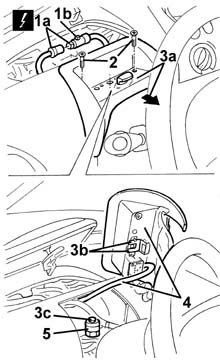
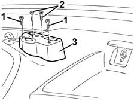
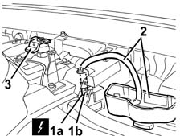
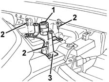

5580M18 navigation system mount(1), lh or rh - r r
- Path
- Procedures > 55 ELECTRICAL EQUIPMENT > 5580 SPECIAL ACCESSORIES > 5580M om-board navigator > 5580M18 navigation system mount(1), lh or rh - r r
- Kind
- repair procedure (removal / refitting; the operation number is the code)
- Applies to
- all engines; all production periods
- Interactive page
- https://sloeber94.github.io/elrnDB-fMltpl/en/#/2891998
Applies to: all engines; all production periods
 Removing
Removing
 Refitting
Refitting5580M14 positionable navigation system panel - r r
1. Disconnect the electrical connection (1a) acting on the retainer (1b).
2. Undo the bolts securing the mounting.
3. Move the mounting (3a) in the direction of the arrow in order to disconnecting the fork (3b) from the retainer (3c).
4. Remove the mounting and bridge.
5. If necessary, undo the retaining bolt.

Applies to: all engines; all production periods
Refitting
RemovingCheck that the mounting is undamaged.
If removed, tighten the retaining bolt.
Position the mounting and bridge.
Engage the mounting fork with the retainer.
Tighten the bolts fixing the mounting.
Connect the electrical connection.
5580M14 positionable navigation system panel - r r
Carry out the satellite navigatorl 'Menù Test' ( 5580M om-board navigator ).
Applies to: all engines; all production periods
Removing
Refitting5580M14 positionable navigation system panel - r r
7040A96 facia glove compartment flap (1) lh or rh - r r (right and left)
5580C26 LOCK BARREL KEY/SWITCH for deactivating passenger 'AIR BAG - R.R.
7040A44 facia lh side cover - r r
1. Undo the bolts securing the mounting.
2. Undo the fork retaining bolts.
3. Move the mounting.

Applies to: all engines; all production periods
7040A09 passenger air bag compartment cover - r r
7040A45 facia rh side cover - r r
1. Disconnect the electrical connection (1a) acting on the retainer (1b).
2. Remove the mounting and bridge.
3. Keep the fork.

Applies to: all engines; all production periods
1. If necessary, undo the retaining bolt.
2. If necessary, undo the bolts fixing the bracket.
3. Remove the bracket.

Applies to: all engines; all production periods
Refitting
RemovingCheck that the mounting is undamaged.
If removed, position the bracket and secure it using the bolts.
If removed, tighten the retaining bolt.
Position the fork on the bolt retainer.
Connect the electrical connection.
7040A45 facia rh side cover - r r
7040A09 passenger air bag compartment cover - r r
Position the mounting and tighten the fork fixing bolts.
Tighten the mounting fixing bolts.
7040A44 facia lh side cover - r r
5580C26 LOCK BARREL KEY/SWITCH for deactivating passenger 'AIR BAG - R.R.
7040A96 facia glove compartment flap (1) lh or rh - r r (right and left)
5580M14 positionable navigation system panel - r r
Carry out the satellite navigator 'Menù Test' ( 5580M om-board navigator ).
Topics linked from this page (8)
- 5580M om-board navigator
- 5580C26 LOCK BARREL KEY/SWITCH for deactivating passenger 'AIR BAG - R.R.
- 5580M14 positionable navigation system panel - r r
- 7040A09 passenger air bag compartment cover - r r
- 7040A37 fuse box cover - r r
- 7040A44 facia lh side cover - r r
- 7040A45 facia rh side cover - r r
- 7040A96 facia glove compartment flap (1) lh or rh - r r